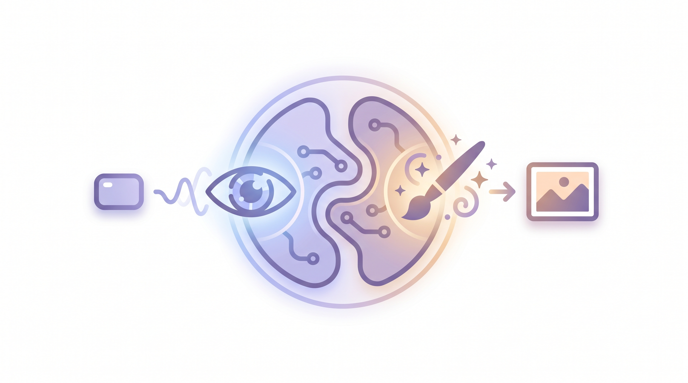
TL;DR
Boogu-Image-0.1 (a fork of OmniGen2) is an Apache-2.0 unified family: a Qwen3-VL multimodal model reads the instruction and any input image, a double-stream MMDiT denoises, and the open FLUX.1 VAE decodes. The variants I tested are Edit (text + image → edited image, 25–50 steps) and Turbo (text → image, a 4-step distilled model, no CFG).
On a 24 GB 4090 the bf16 pipeline is ~37 GB (20 GB transformer + 17 GB MLLM) — it cannot fit fully, so some offload is mandatory. The Edit model's first headache was blur: the output was silently upscaled from a low-res latent. The fix was group offload + native resolution, which also dropped peak VRAM to ~16 GB.
The deeper lesson was about identity. image_guidance_scale = 1.0 (the repo default) disables
image CFG — great for bold edits, but on dramatic scene changes the face drifts. Raising it to ~3 locks the
identity but makes edits timid. Turbo, meanwhile, is the surprise star: photorealistic
1024² images in ~14 seconds at 4 steps.
What Boogu-Image is, in plain words
Most image generators have a one-way job: text goes in, a picture comes out. A unified model is different — the same network can both read (understand a prompt and any images you give it) and draw (generate or edit a picture). Boogu-Image-0.1 is exactly that: a 10B Apache-2.0 model family, forked from OmniGen2, that the authors trained with about an order of magnitude less data than comparable open models — and it still holds its own.
Under the hood the pipeline has three parts. A Qwen3-VL multimodal LLM is the "understanding" half: it encodes the instruction and any input photos into rich embeddings. A double-stream MMDiT diffusion transformer (built on Lumina2 blocks) is the "generation" half: it denoises a latent guided by those embeddings. And the open-source FLUX.1 VAE decodes that latent into the final pixels. That is the whole trick behind the "one model that sees and paints" picture above.
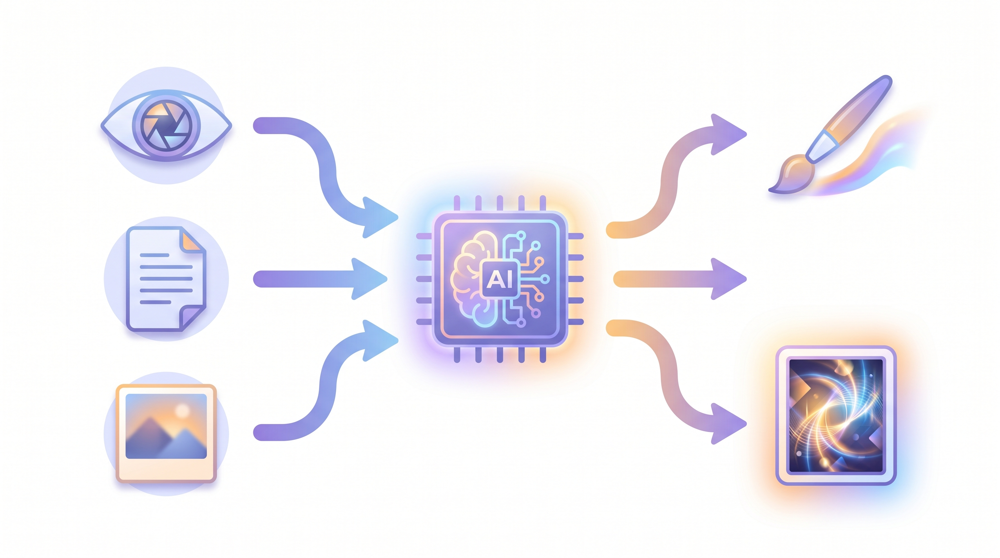
uv venv
on Python 3.10 with torch 2.7.1+cu126, diffusers 0.38, transformers 5.12,
flash-attn 2.8.3. Weights live on a data disk (/d/hugging_face_cache) — each checkpoint
is ~36 GB.
The two models I tested
The family ships several variants (plus fp8-quantized versions of each). I focused on the two most useful on a single GPU: the Edit model for image editing, and the Turbo model for fast text-to-image. They share the same 10B architecture; what differs is the task and the sampling recipe.
| Model | Task | Steps | Guidance | What it's for |
|---|---|---|---|---|
| Edit | text + image → image (TI2I) | 25–50 | text 4–5 · image 1.0 | editing a photo from an instruction |
| Turbo | text → image (T2I) | 4 | none (CFG 0.0) | fast, photorealistic generation |
| Base | text → image (T2I) | 25–50 | text 2–5 | foundation model, strong text rendering |
| *-fp8 | — | — | — | fp8-quantized versions of each |
Installation — what actually worked
The repo recommends conda; I translated that to an asdf + uv venv. Order matters for
ML installs: torch first (CUDA wheels), then the repo, then the compiled flash-attn extension, then
the checkpoints. The one snag worth flagging up front is that the repo's flash-attn helper assumes
pip exists — a uv venv has none, so I installed the matched prebuilt wheel directly.
# 1. environment (Python 3.10, the repo's tested version)
uv venv .venv --python "$(asdf which python)" && source .venv/bin/activate
# 2. GPU-first install — CUDA 12.6 torch, then the repo
uv pip install -r requirements/torch2.7-cu126.txt
uv pip install -e .
# 3. flash-attn: the helper downloads a wheel to /tmp but can't pip-install in a uv venv
python utils/get_flash_attn.py || true
uv pip install /tmp/flash_attn-2.8.3+cu126torch2.7-cp310-cp310-linux_x86_64.whl
# 4. checkpoints (~36 GB each) -> a data disk
export HF_HOME=/d/hugging_face_cache HUGGINGFACE_HUB_CACHE=/d/hugging_face_cache
hf download Boogu/Boogu-Image-0.1-Edit --local-dir $HF_HOME/boogu-models/Boogu-Image-0.1-Edit
hf download Boogu/Boogu-Image-0.1-Turbo --local-dir $HF_HOME/boogu-models/Boogu-Image-0.1-Turbo
Two things bite if you skip them. First, a runtime invariant: device must be exported as a
shell variable before launch, not only passed as a flag — several modules read os.getenv("device")
at construction time to pick the CUDA / flash-attention path. Second, do not let a later uv pip install
(e.g. for Gradio) re-resolve the torch stack — it silently bumped my pinned torch 2.7.1+cu126 up to
2.11+cu130 and broke the flash-attn ABI. Pin torch last.
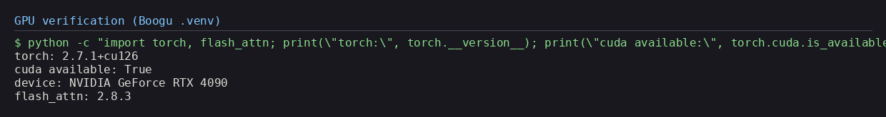
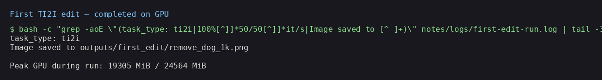
To make the Edit model pleasant to use I wrapped it in a small Gradio app: upload an image, type an instruction, generate. It loads the pipeline once at startup and exposes the steps / guidance / seed knobs.
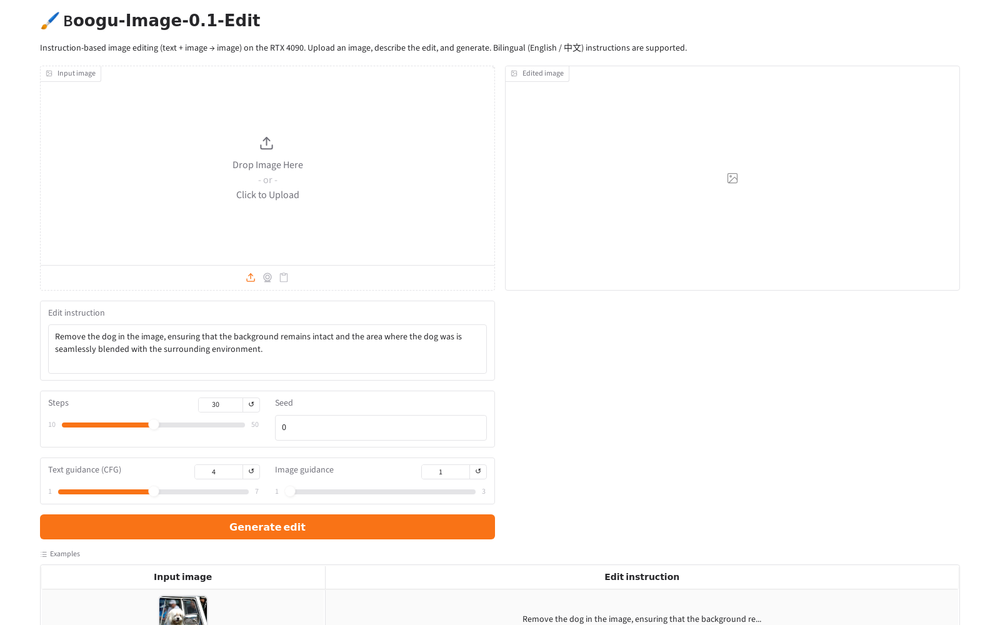
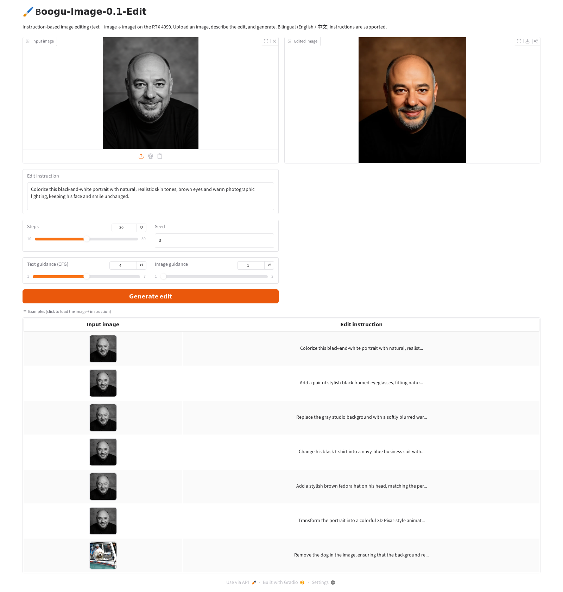
The Edit model — editing a photo with words
The Edit model takes an image plus an instruction and returns an edited image. No masks, no control maps — just a sentence. "Remove the dog," "add glasses," "put him in a kimono." The Qwen3-VL half reads both your words and the picture, so the instruction can refer to what's actually in the image.
The simplest demonstration is object removal. Here is the model's own example — a dog in a car window, and the instruction to remove it and rebuild the background:

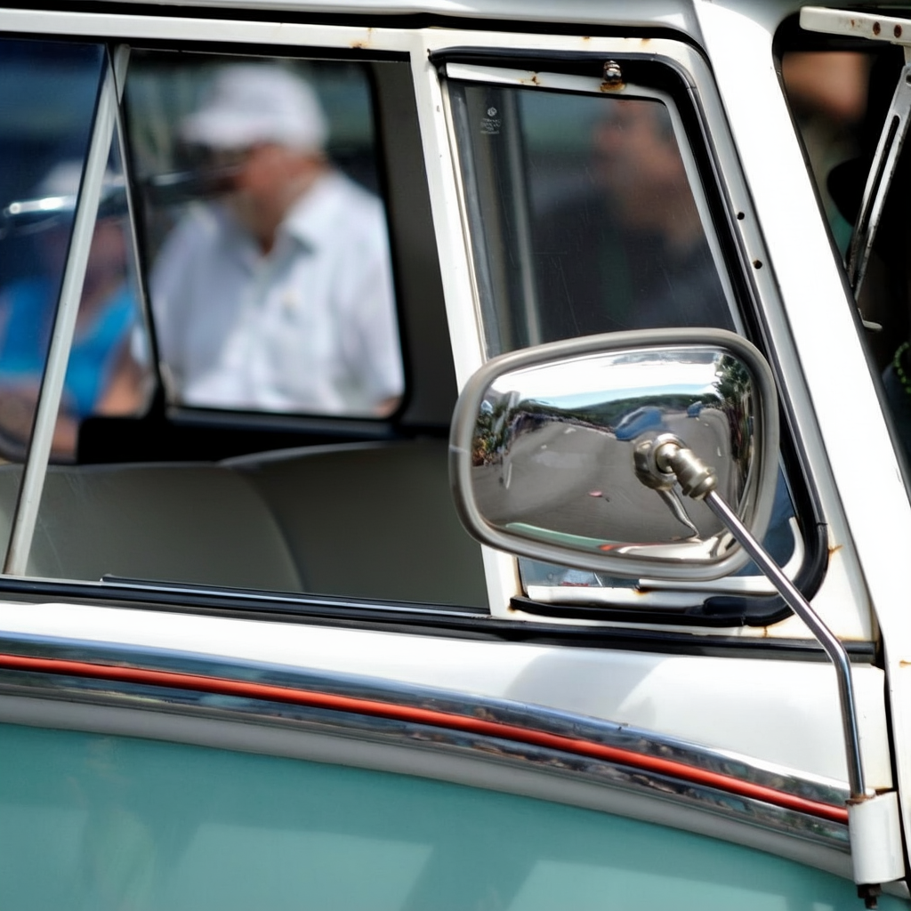
Edit gallery — one face, twelve edits
To really probe the Edit model I took a single black-and-white studio portrait and pushed it through twelve instructions — from a gentle colorize to dropping the same man into a Kyoto garden or in front of the pyramids. Every image below was generated at the repo's canonical settings: Boogu-Image-0.1-Edit, native 1536×1792, 50 steps, text guidance 4.0, image guidance 1.0, group offload — about 3.5 min each on the 4090.
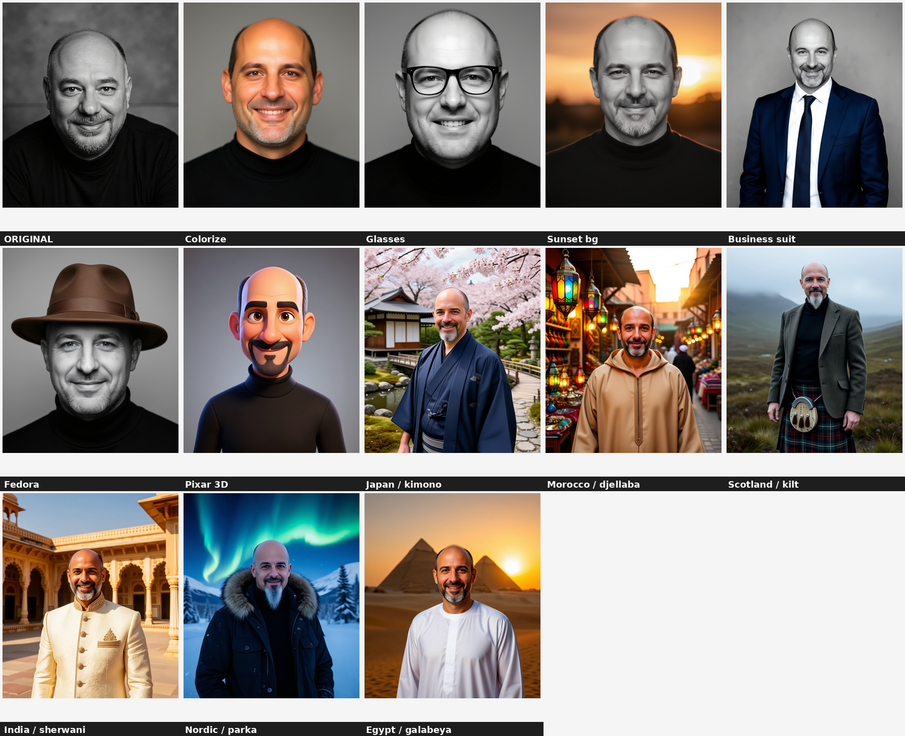
Six of them in detail, with the exact instruction and an honest verdict on each:
Colorize
Strong"Colorize this black-and-white portrait with natural, realistic skin tones, brown eyes and warm photographic lighting, keeping his face and smile unchanged."
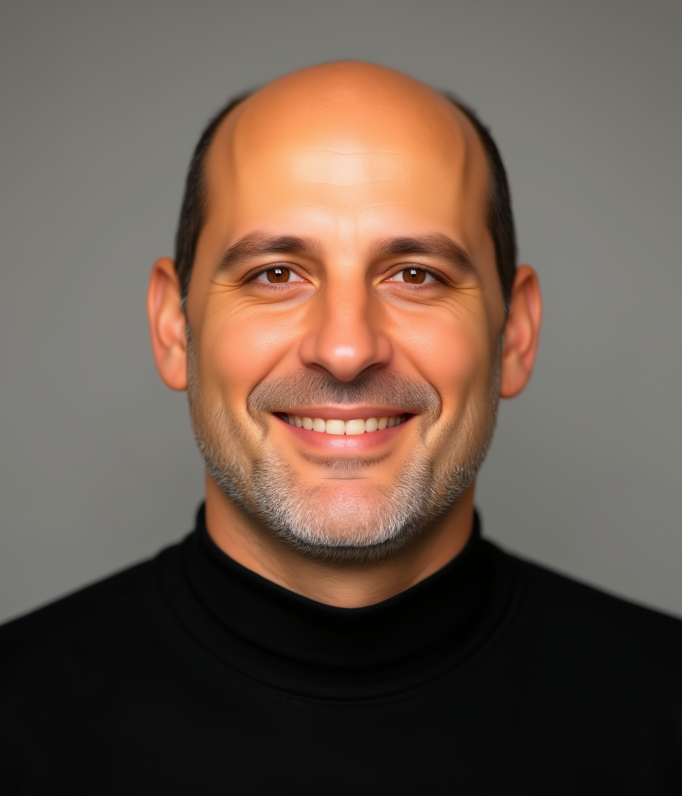
Honest take
Natural, believable colour — skin tone, brown eyes, the grizzled gray goatee all read right, and the studio backdrop is correctly left alone. This is the model at its most reliable: a localized change with identity fully preserved.
Add glasses
Strong"Add a pair of stylish black-framed eyeglasses, fitting naturally on his face and matching the lighting of the photo."
Honest take
The frames sit correctly, catch the same studio light, and the model left everything else (including the black-and-white treatment) untouched. Adding a single object onto a face is handled cleanly.
Business suit
Strong"Change his black t-shirt into a navy-blue business suit with a white shirt and a tie, keeping his head and face unchanged."
Honest take
Clean wardrobe swap — the suit, shirt and tie are coherent and the head is left in place. Clothing changes that keep the same framing are a sweet spot for image guidance 1.0.
Pixar-style 3D
Fun, looser identity"Transform the portrait into a colorful 3D Pixar-style animated character while preserving his likeness, goatee and smile."
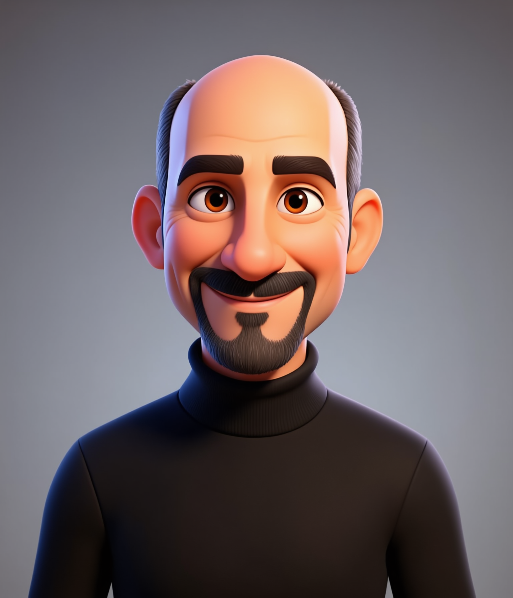
Honest take
A convincing stylization — the bald head, goatee and grin survive the jump into 3D-cartoon territory. As with any heavy style transfer the identity loosens a little, but it is unmistakably the same character.
Japan — kimono in a Kyoto garden
Full transformation"Place this man in a traditional Japanese garden in Kyoto wearing an elegant dark-indigo kimono, under soft cherry-blossom daylight. Keep his face, goatee and smile clearly recognizable."
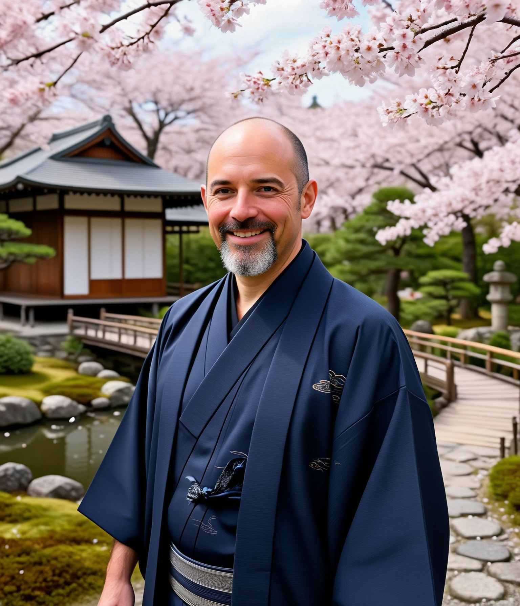
Honest take
This is the one that surprised me. From a head-and-shoulders studio crop, the model invented a believable full-body figure in a kimono, in a garden, under cherry blossoms — and kept the face recognizable. That whole-scene freedom is exactly what image guidance 1.0 buys you (more on that below).
Egypt — galabeya at the pyramids
Full transformation"Show this man in front of the pyramids of Giza at sunset wearing a white Egyptian galabeya, under warm desert light. Preserve his face, goatee and smile."
Honest take
Warm desert grade, the pyramids placed correctly, the galabeya draped naturally. The face is a touch softer at full-body scale — the recurring trade-off — but the scene change is wholesale and convincing.
The edit-mode struggle: blur, then OOM
Getting those clean results took two fixes that are worth recording, because both look like model problems and are actually configuration problems.
max_input_image_pixels set too low (1024²), below the
input photo's 2.75 MP. With align_res=True the pipeline generated a low-res latent and then
upscaled it — "a large but blurry image," exactly as the repo's own example warns. Fix: raise the
limit to the pretraining max (2048×2048) so generation runs at the input's native resolution.
CUDA out of memory. The bf16
pipeline is ~37 GB and simply can't be fully resident on 24 GB.
The fix for both is the same offload strategy: block-level group offload. Instead of pinning the
whole transformer on the GPU, it streams a couple of blocks at a time, freeing ~19 GB for activations — so the
model can generate at full native resolution. Peak VRAM dropped to ~16 GB, and because
use_stream=True overlaps the transfers with compute, it is only modestly slower than whole-model
offload (~4.3 vs 2.8 s/step).
from diffusers.hooks import apply_group_offloading
for mod in (pipe.transformer, pipe.mllm, pipe.vae):
apply_group_offloading(mod, onload_device="cuda:0",
offload_type="block_level",
num_blocks_per_group=1, use_stream=True)
# + export PYTORCH_CUDA_ALLOC_CONF=expandable_segments:True| Strategy (24 GB, 1536×1792 TI2I) | Result | Peak VRAM |
|---|---|---|
no offload (pipe.to(cuda)) | can't load — 37 GB pipeline | > 24 GB → OOM |
| model-CPU-offload (whole model) | OK at ≤1024², OOMs at native res | ~24 GB at native → OOM |
| group offload (block-level, streamed) | native res, sharp | ~16.4 GB |
Steps, CFG & the identity question
With sharpness solved, the interesting problem appeared: on a dramatic edit (studio → outdoor sunset) the man
came out looking like a different, younger person. The instinct is to blame the prompt, but the real
lever is image guidance. Per the inference guide, image_guidance_scale = 1.0 —
the default — disables the reference-image term in classifier-free guidance. With nothing anchoring the
output to the input face, a big scene change lets it drift.
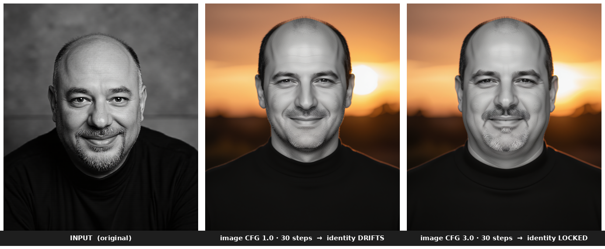
image_guidance_scale changes. 1.0 drifts; 3.0 locks the face.So I swept it. Two things turned out to matter, and they pull in opposite directions:
- Image guidance saturates fast. Values of 1.5, 2.0 and 3.0 all lock the identity and are nearly identical to each other; pushing on to 4, 6 or 9 changes nothing more. The useful range is tiny.
- Steps matter more than I expected. Going from 30 → 50 steps is what resolved the gray, grizzled goatee and the fine skin texture — and it noticeably improved identity even at the default guidance.
| image_guidance_scale | Identity | Edit strength | Best for |
|---|---|---|---|
| 1.0 (repo default) | looser (fine at 50 steps) | strong — full-scene transforms | dramatic country / costume edits |
| 1.5 – 3.0 | locked | timid — stays in the original framing | subtle, identity-critical edits |
| 4.0 – 9.0 | locked (saturated) | weakest | no benefit over 3.0 |
Here is the counter-intuitive part. High image guidance buys identity but costs edit freedom:
pinning the output to the input pixels also pins the framing, so the "put him in a kimono in a garden"
instruction can only recolour the cropped studio shot — it can't build the full-body scene you saw above. For the
"around the world" gallery the model needs that freedom, so the repo default 1.0 actually
produces the more successful edits.
image_guidance_scale = 1.0 for dramatic scene / costume changes
(and use 50 steps so identity holds up). Raise it to ~2–3 only for subtle edits where a faithful face matters more
than a bold change. Either way, this is a one-image-vs-the-input trade-off, not a "better number".
Turbo — photorealism in four steps
The Turbo model is the same 10B network, distilled to generate in just 4 steps with no CFG. It is text-to-image only. After a one-time warm-up, each 1024² image took ~14–15 seconds on the 4090 — against roughly 3.5 minutes for a 50-step Edit. That speed difference reframes how you use it: Turbo is for iterating, Edit is for finishing.
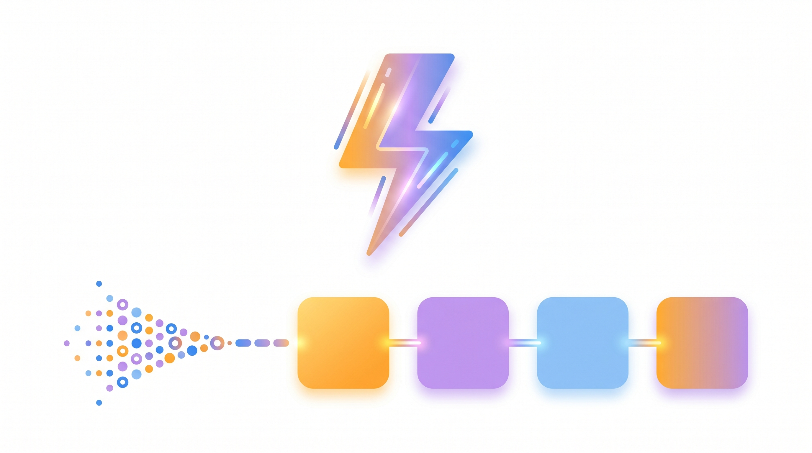
Turbo-fp8 checkpoint.
Photography
Strong"A photorealistic close-up portrait of an elderly fisherman with a deeply weathered, wrinkled face and a white stubble beard, golden-hour side light, shot on an 85mm lens with shallow depth of field, high detail, film grain."
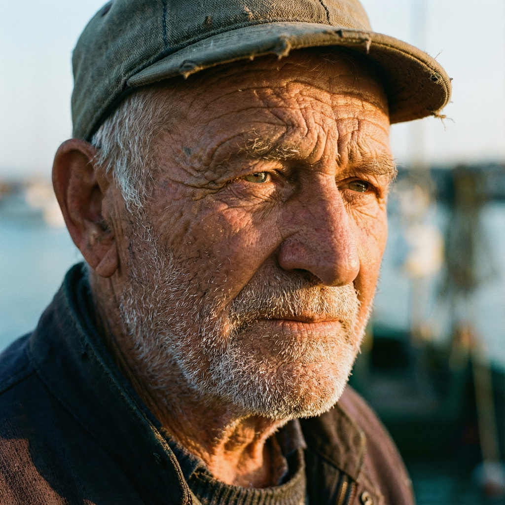
Honest take
Genuinely photographic in four steps — skin texture, the rim light, the harbour bokeh. There is no "AI plastic" look. Photorealistic faces are clearly a Turbo strength.
Text rendering
Partial'A clean modern travel poster with the bold title "BOOGU TURBO" across the top, a stylized snow-capped mountain and a winding road below, retro two-color print style, crisp legible typography.'
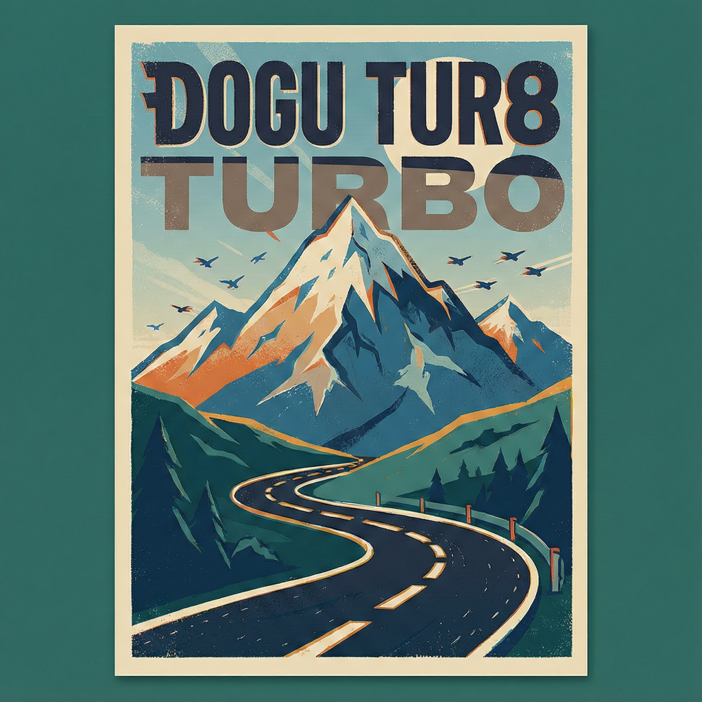
Honest take
Lovely composition, and "TURBO" rendered cleanly — but "BOOGU" came out garbled ("DOGU TUR8"). Text is the weak spot, and it's amplified at 4 steps. The Base model (25–50 steps) is the one to reach for when crisp typography is the point.
3D / stylized
Strong"A cute 3D Pixar-style little robot watering a small potted plant on a sunny windowsill, big expressive eyes, soft cinematic lighting, octane render."
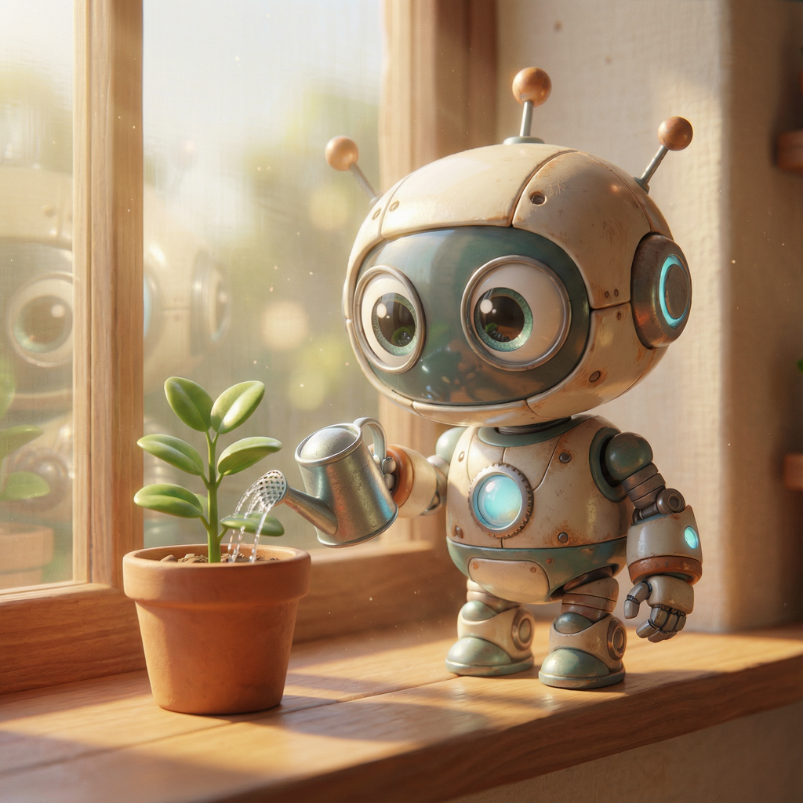
Honest take
Clean, charming, on-brief 3D-cartoon render with soft lighting. Defined art styles come out reliably and need no special prompting.
Landscape
Strong"A serene Japanese garden in autumn with a vivid red maple tree, a koi pond, a stone lantern and a small wooden bridge, ultra-detailed, soft morning mist."
Honest take
Every requested element is present and composed coherently — maple, pond, lantern, bridge, mist. Detailed nature scenes hold together well even at four steps.
Chinese gilded landscape (bilingual prompt)
On-style"国风琉金风格的山水画，桂林山水在金光下层峦叠嶂，江水如镜，山峰勾勒发光金线，石青石绿岩彩与鎏金质感结合，空中飘浮金色粒子。" (a gilded Chinese shan-shui landscape)
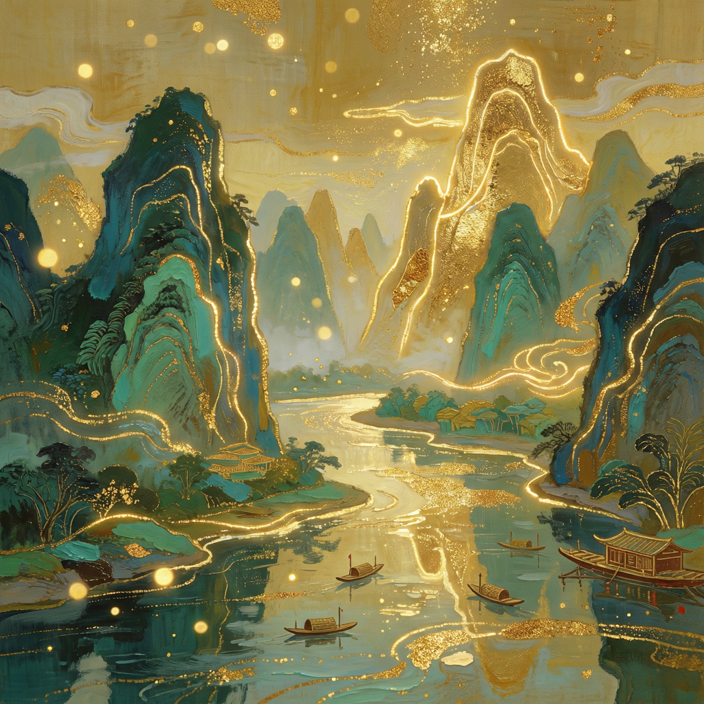
Honest take
The gilded shan-shui aesthetic — glowing gold outlines, mineral-green pigment, floating gold particles — is captured faithfully from a Chinese-language prompt. Boogu's bilingual training shows.
Honest verdict
Boogu-Image is a likeable, genuinely capable open model, and running both halves on one 24 GB card was very doable. Turbo is the one I'd reach for daily — four-step, ~15-second, photorealistic text-to-image is a joy to iterate with, and stylization and bilingual prompts are strong. Its only real weakness is in-image text, which the slower Base model handles better.
Edit is more nuanced. Localized edits — colorize, add an object, change clothing, swap a
background — are reliable and clean. Whole-scene transformations are impressive when you let them happen (image
guidance 1.0, 50 steps), at the documented cost that identity is a strong likeness rather than a perfect lock. The
most reusable lessons are mechanical and apply to any large unified model on a 24 GB GPU: match
max_input_image_pixels to the input or you'll upscale a blurry latent; use block-level group offload
to fit native resolution; and treat image_guidance_scale as an identity-vs-edit-strength dial, not a
quality knob.
image_guidance
1.0 for bold scene changes (~2–3 for subtle/identity-critical ones). Fast generation → Turbo, whole-model
offload, 1024², 4 steps. Crisp in-image text → reach for the Base model instead.
References
- Hugging Face —
Boogu— the Base, Edit, Turbo checkpoints (plus fp8 variants). - GitHub —
boogu-project/Boogu-Image— inference code, demo scripts and the inference guide. - OmniGen2 — the unified model Boogu-Image is forked from.
- Building blocks: a Qwen3-VL multimodal instruction encoder, a Lumina2-style double-stream MMDiT, and the open FLUX.1 VAE for latent decoding.
- torchao — fp8 weight quantization for the fp8 checkpoints; flash-attention for the attention kernels.
Honest take
The dog is gone and the window frame, the reflection and the person behind it are reconstructed convincingly — no smear, no ghost. Object removal with background in-painting is clearly in the model's comfort zone.